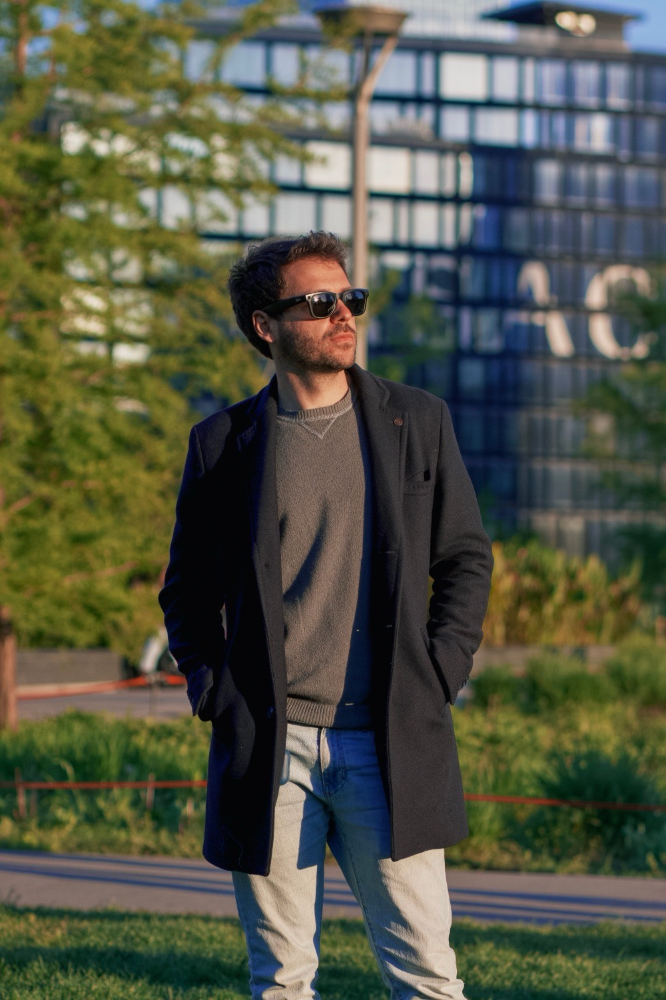
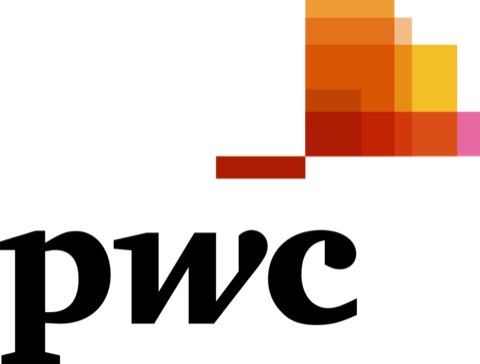
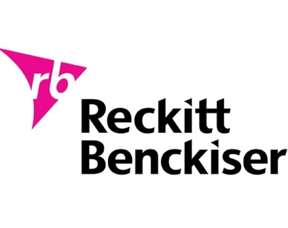
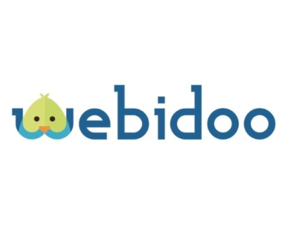
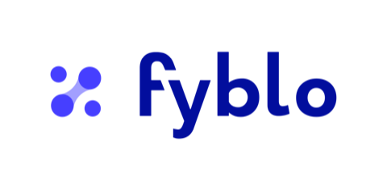

Come fare impresa non lo insegna nessuno.
Io lo sto imparando un pezzo alla volta. Marketing, growth, prodotto, una fintech regolamentata: non mestieri diversi, ma i pezzi di una cosa sola — fare impresa. Il prossimo passo non è toccarne un altro: è costruire e scalare qualcosa di intero.





Prima, capire.
Economia, con una tesi sull'AI applicata al marketing. Volevo capire una cosa sola: perché le persone scelgono ciò che scelgono. Se avessi voluto solo costruire, avrei fatto ingegneria.
L'occhio sul mercato.
Consulenza e multinazionali, poi le startup: PwC sull'esperienza utente, Reckitt, Webidoo, Growth Tribe. Anni passati a guardare da vicino cosa il mercato vuole, e perché.
Fyblo. Costruire sul serio.
Co-fondatore di una fintech che portava gli strumenti finanziari sulla blockchain — un'idea che in pochi, allora, pensavano avesse senso. L'abbiamo costruita davvero: piattaforma DLT, un wallet proprietario conforme a eIDAS, le prime tokenizzazioni. A crederci sono stati investitori come CDP Venture Capital, Zest, Credem e Nexi, fino alla call DLT del Milano Hub di Banca d'Italia. Nel 2025 tecnologia e asset sono passati ad Add Value.
Portare a mercato.
Head of Growth di un prodotto edtech, cresciuto fino a migliaia di persone su B2C e B2B, con partner come Mondadori (PLAI) e il British Council. Perché un'idea, per contare, deve arrivare a chi la userà.
Insegnare.
Istruttore: porto AI, blockchain e cloud a professionisti e aziende. Spiegare il complesso in modo semplice è diventato un mestiere, non un hobby.
Thinking, Fatturai, e il racconto.
Con Thinking costruisco software per chi ha qualcosa di nuovo da portare nel mondo; con Fatturai lo faccio per me. E ogni giorno racconto la tecnologia a una community di oltre 20.000 persone.
La tecnologia conta quando arriva alle persone.
Istruzione accessibile
Sono equity partner in EdTech e attivo con Vision APS. La tecnologia nuova deve arrivare a chi non è del mestiere, prima e meglio.
Costruire in pubblico
Mostro il processo, non solo il risultato. Si impara di più da come una cosa è fatta che da quanto è lucida.
Anticipare, non inseguire
Mi interessa il terreno che gli altri non vedono ancora. Non per arrivarci primo: per renderlo accessibile.